Plan UI review: desktop and phone
Revised 12 October 2026 after the owner's voice review. Nothing here is built in Kitchie. Decisions 85 to 106 are mostly owner-stated, 12 Oct 2026; where he was unclear they are marked ambiguous and listed as open questions, not guessed. Written notes: plan-ui-review.md. Earlier decisions 63 to 84 are still proposals.
- The "bulb" icon top right
- That is Plan settings. It was drawn like a sun, so it looked like a bulb. It is now a plain gear and is labelled. The page's real top-right controls are Copy last week, Plan settings, and (phone) the Mine dropdown.
- The Options button, bottom of the page
- It is now called Mockup options. It is only for this review: it switches the variants below live. It is not part of the app.
- "Bottom sheet, two stops"
- On the phone, tapping a meal can open its detail as a sheet that slides up from the bottom. "Two stops" means it can rest at two heights: half (the meal card still visible above) and full. It is now only the comparison option; the new default docks the detail under the day ribbon instead. See it: phone, sheet.
- Why the pictures were missing
- A rule in the repo (
.gitignore, lineshots/) kept the whole screenshots folder out of git, so the images were never published. They now live inimg/and load.
You had not seen these. They are still drawn, with their own page: open the four options A to D.
A Week board + docked inspector
Seven day columns and the inspector docked on the right. Superseded in part: the review's board (below) is this layout, with the new ribbon, dropdown filter and Ask AI.
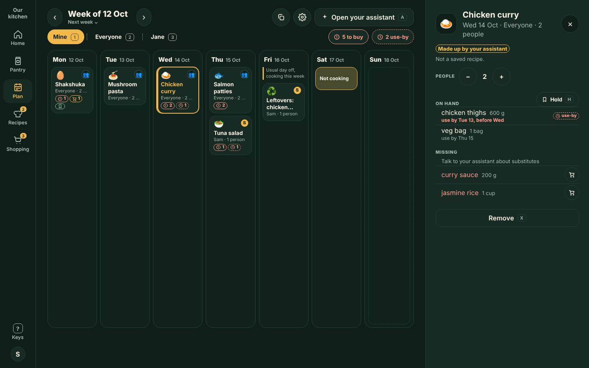
B Agenda + detail pane
A day-by-day list on the left and the meal detail pane on the right. Superseded in part: the review's agenda rows are this layout.
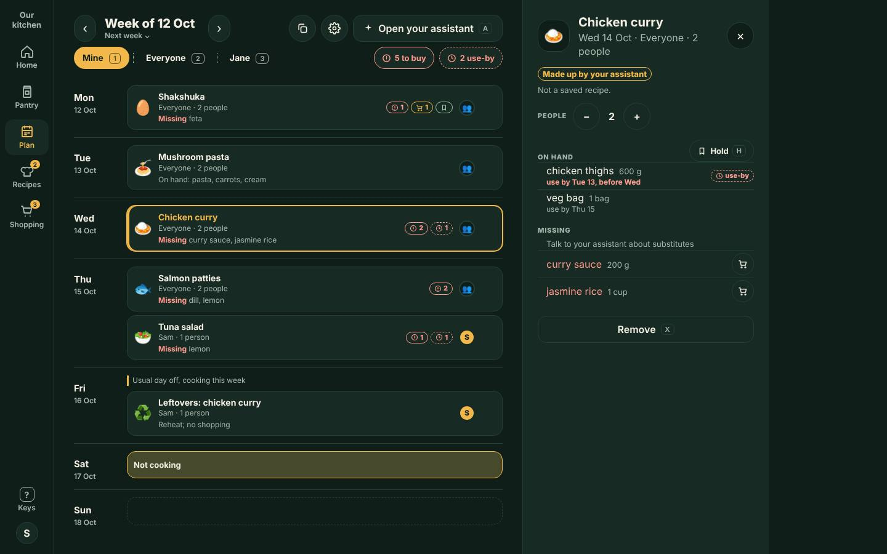
C Week strip + focused day + Pantry flyout
A strip of seven day tabs, one day large, the detail as a Pantry-style flyout. Superseded in part: the day strip is now the continuous ribbon; "Day focus" here is its descendant.
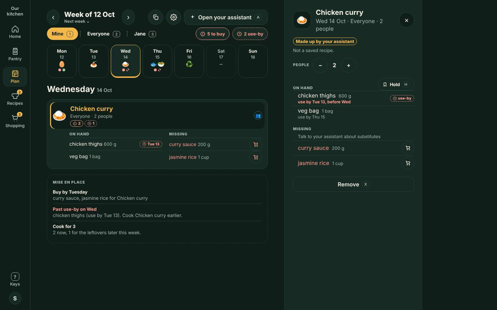
D Cook sheet
An ingredients-by-day grid with use first and to buy groups. Not superseded: nothing in the review replaces it; the "full, cook sheet" phone idea is the one you did not want to lock.
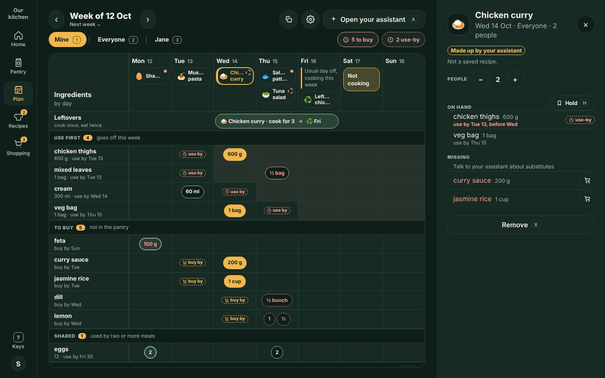
What the new work supersedes in A to D: the prev and next week arrows (now the ribbon), the always-open person chips (now a dropdown), the "Open your assistant" button (now Ask AI on the night), the dashed empty box, and icon-only chips. Their layouts are the review's layouts below.
Phone: a continuous three-week day ribbon with the gliding marker; a compact header (week label with Last, This or Next week, Mine dropdown, copy, gear) that shrinks on scroll; Open night as quiet text with Ask AI and Surprise me; Not cooking hidden with an edge peek; meal detail docked under the ribbon with neighbours peeking; undo on the changed day; labelled status chips.
Desktop: as before (board from 1760 px, agenda rows below, docked inspector) with the same ribbon, dropdown filter, Ask AI, slim Not cooking, Copy last week that flips to Undo.
In both pages the Mockup options button switches every variant live (bottom right on phone, bottom left on desktop). The theme picker (bottom right of this page) switches dark and light.
Day ribbon default
owner-stated Scroll day by day, not week by week. Three weeks: last (read only), this, next. "Week of" follows the day in focus. Today is filled; a Today pill appears when you are away from it. The soft rectangle glides as you scroll the agenda; tapping a day brings it into focus.
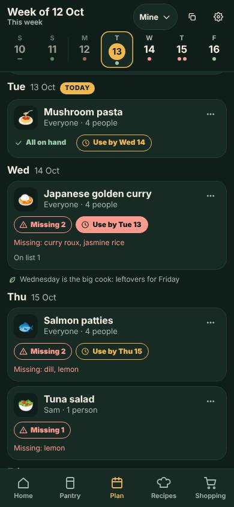
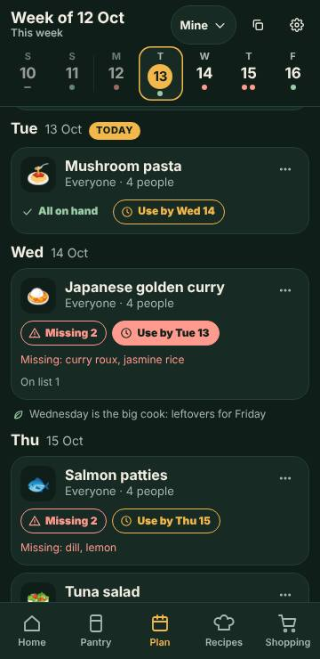
Ambiguous: three or four weeks?
Header: shrink or fixed
owner-stated top space is too expensive. Person filter collapsed, arrows gone. Proposal: the header shrinks to one line on scroll down and returns on scroll up (recommended) or stays fixed.
Open night and Not cooking default
owner-stated "Open night" is quiet text; tap it to mark Not cooking. Ask AI and Surprise me are scoped to that night. Not cooking is hidden and peeks at the edge it scrolls past. No "Open your assistant" and no floating assistant button.
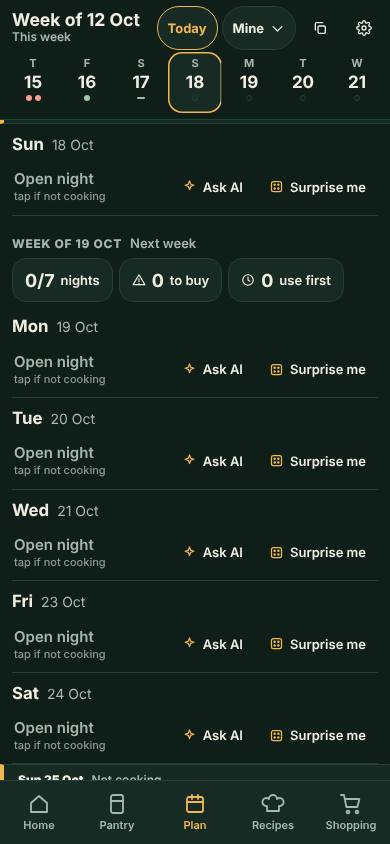
Ask AI to plan this (curtain) not locked
owner-stated when everything in view is empty or Not cooking, a curtain drops under the ribbon and dismisses on any touch. Two trigger variants: start (the first three nights of the week are empty, immediate, default) and idle (whole week empty, after 5 s).
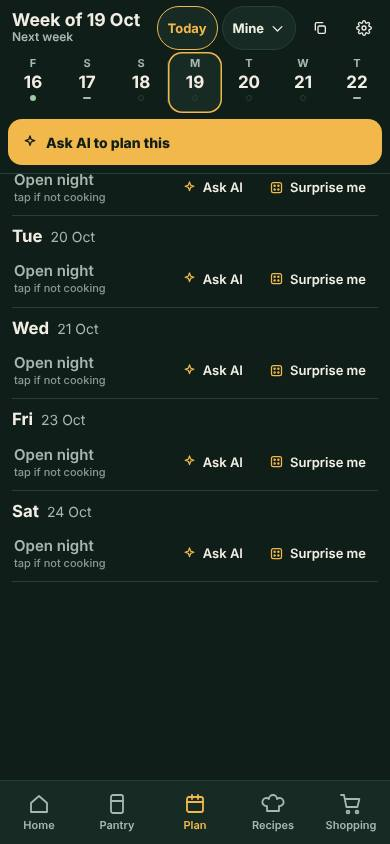
Who filter and people count
owner-stated the filter collapses into a dropdown. Options for the "Everyone" part: one dropdown (default), segment plus People dropdown, or the old chips behind a chevron. Ambiguous: he also said the number-of-people control should be a dropdown: the meal detail has a stepper or a dropdown.
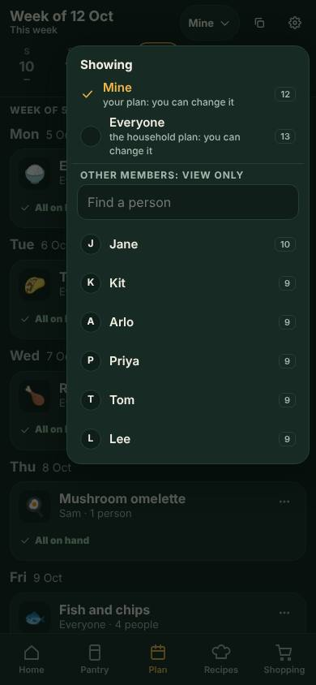
Read-only plans
owner-stated other members' plans are always read only; Copy is disabled and a line says so.
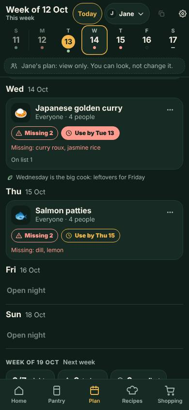
Copy forward and in hand default
owner-stated a past day is read only. Swipe right on a past meal (or use its menu): pick a date, then the meal is in your hand until you tap a day to drop it. All days show while carrying, including Not cooking. Dropping on Not cooking makes it a cooking day; dropping on a meal replaces it and says "Replaced ..." with a pulse on that day. Ambiguous: start of the day or week for where it lands.
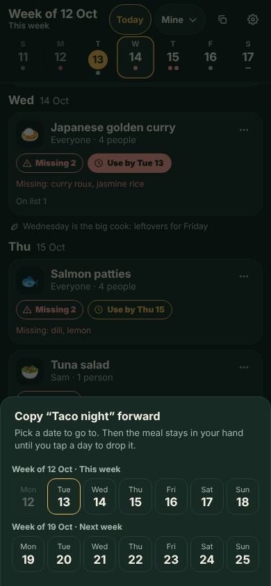
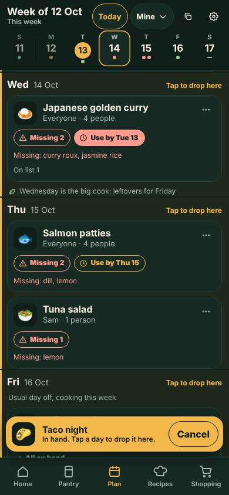
Undo on a phone: four patterns
owner-stated required everywhere; no bottom snackbar. Each picture is the same "replaced" drop. Recommended: 1 on the changed day (and 2 for Copy last week).
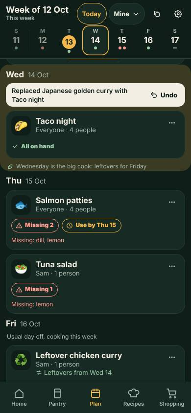
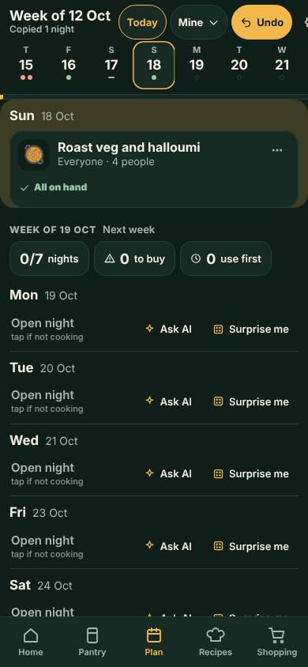
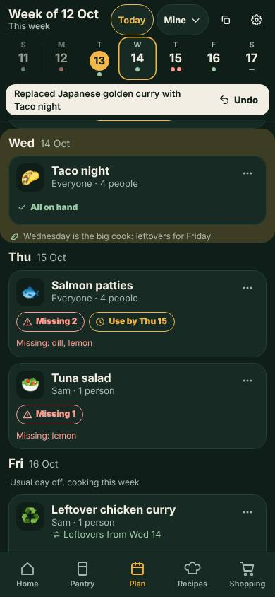
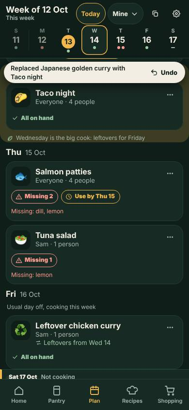
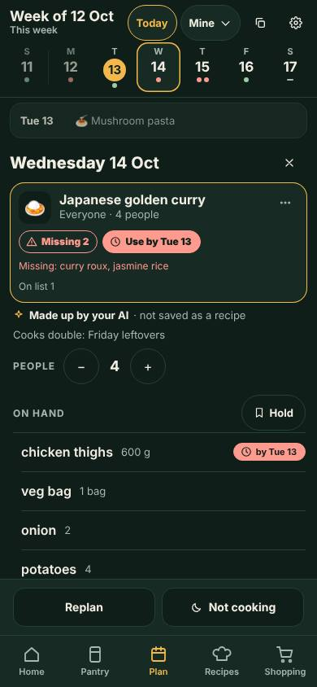
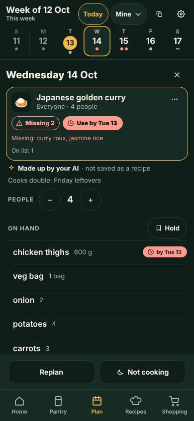

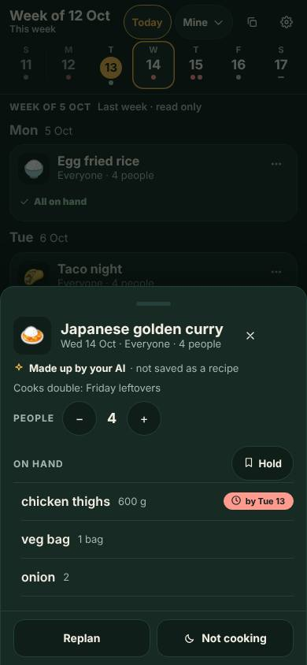
owner-stated the detail docks right under the ribbon, in the flow; the day becomes its heading. What else stays visible is deliberately open.
Week board + docked inspector recommended
Seven columns from 1760 px; the 21-day ribbon with week labels replaces the arrows; one "Showing Mine" dropdown in the title row; Ask AI and Surprise me on open nights; Copy last week flips to Undo.
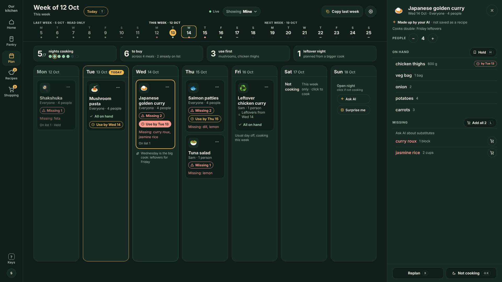
Other desktop options (unchanged)
Layout 3 Day focus, inspector flyout, open night slim row, filter variants: all in Mockup options. Widths: 1024 agenda, 1280 agenda, 1440 docked, 1920 board.
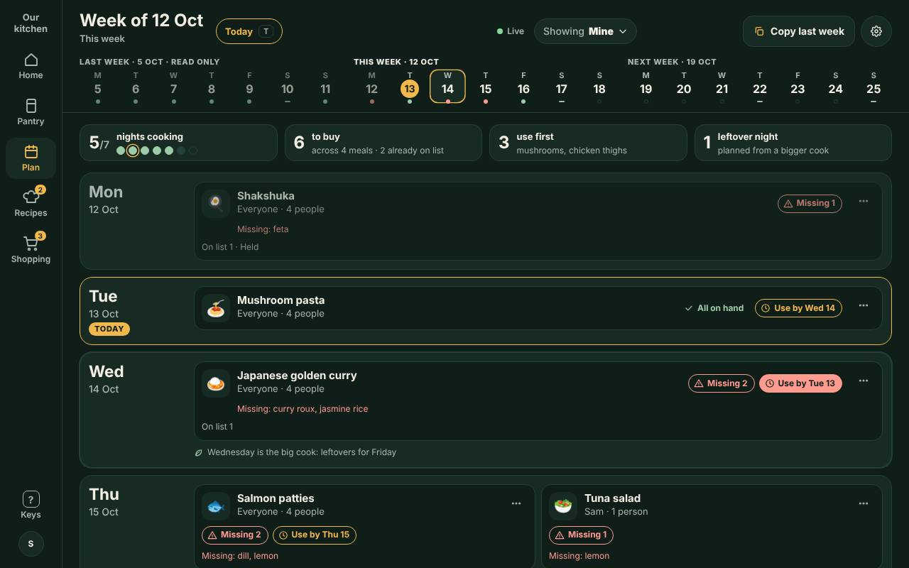
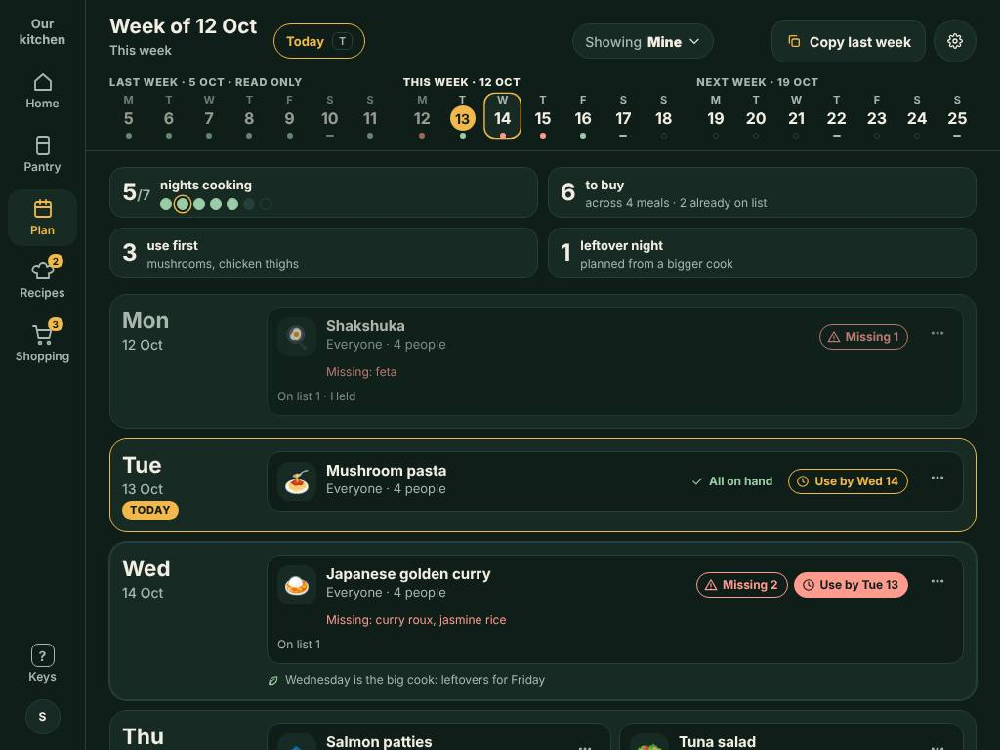
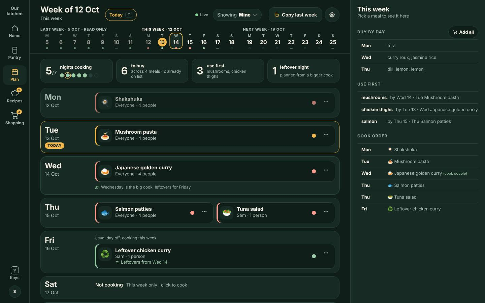
owner-confirmed It looks at timing. Earlier in the week, or when there is room to shop, it may suggest something new and may use items already on the shopping list or already being bought for planned meals. Late in the week, or when you are mostly eating from what is in the house, it favours using up on-hand stock. It never repeats a recent meal. Mock thresholds (proposal): on-hand if the night is today, tomorrow or Fri to Sun of this week; otherwise new; recent means any planned meal within 7 days.
Full wording and the open questions are in plan-ui-review.md. Cite them as "Plan UI review 85" because item-edit-flyout.md reuses the same numbers.
- owner Continuous day ribbon replaces week jumps.
- owner ambiguous Bounded: last, this, next week (he also said four weeks forward).
- owner "Week of" label follows the selected day; Last, This, Next week shown; no fortnight wording.
- owner Today highlighted; jump to today shortcut.
- owner Soft selection marker kept; tapping a day brings it into focus.
- owner Top space: filter collapsed, arrows replaced, label compact.
- Proposal: header shrinks on scroll (recommended) or fixed.
- owner Open night wording; tap makes Not cooking; it hides once you move on.
- owner Not cooking hidden by default; peeks at the edge.
- owner Ask AI and Surprise me per night; Surprise me heuristics confirmed.
- owner "Ask AI" wording; no "Open your assistant", no floating or persistent assistant control.
- owner Not locked: "Ask AI to plan this" curtain, start or idle trigger.
- owner ambiguous Who filter collapses to a dropdown.
- owner ambiguous People count or "various people" as a dropdown.
- owner Copy last week: open days only, active pill, other members read only.
- owner Phone past is read only; swipe right copies forward; in-hand; all days show while carrying.
- owner Undo is mandatory; desktop Copy flips to Undo; phone has options, no snackbar. Proposal: on the changed day.
- owner Drop on Not cooking makes it cooking; drop on a meal replaces it, labelled, with a pulse. Ambiguous: start of day or week.
- owner Detail docks under the ribbon; what else shows is open (3 variants and the sheet).
- owner Missing and Use-by language not landed: four options. Proposal: (a).
- Proposal: desktop equivalents.
- Supersessions of 70, 71, 72, 79, 82, 83 and 68 default.
- Ambiguities (recorded, not guessed): three versus four weeks; the dropdown is the person filter, the people count, or both; where a dropped meal lands (verbatim "start of the day", then "week"); curtain trigger and whether it is locked.
- Still open from the first review: which desktop layout (A to D, board, agenda, focus); fill the window or left-anchored; Esc closing a flyout; leftover link as real data; board only from 1760 px.
- Picks needed: undo pattern, phone detail variant, status option (a to d), header shrink or fixed.
- Not reachable: the Kitchie repository, so the existing "Ask AI" wording could not be copied and no Kitchie issue was filed.
- Sample data: members are invented (Sam, Jane, Kit, Arlo, Priya, Tom, Lee). Today in the sample is Tue 13 Oct; last week is Mon 5 to Sun 11, next week Mon 19 to Sun 25.
- What loads: phone.html: theme.css, phone.css, data.js, status.js, phone.js. desktop.html: theme.css, d.css, data.js, status.js, desktop.js plus only the matching size files (d-1024, d-1280, d-1440, d-1760, d-1920, d-short). No images and no fonts beyond the theme; the pictures on this page load lazily. Viewport code is only in the size files and phone.*.
- Pictures in
img/are quick looks (dark theme); the pages are the source of truth.